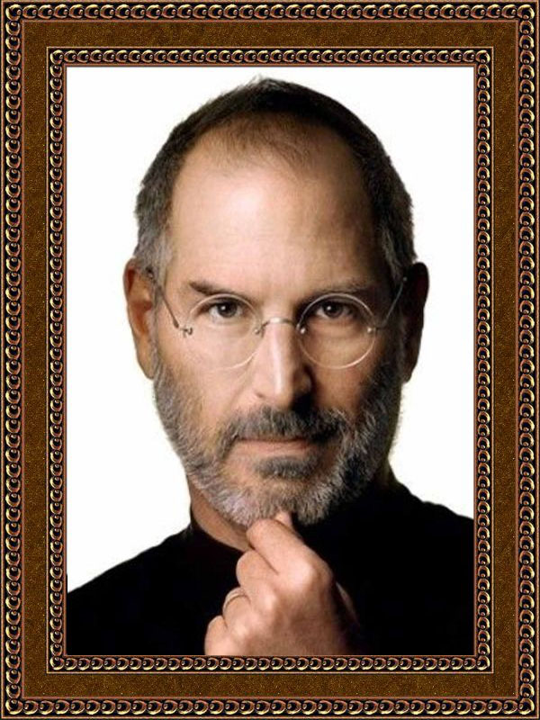
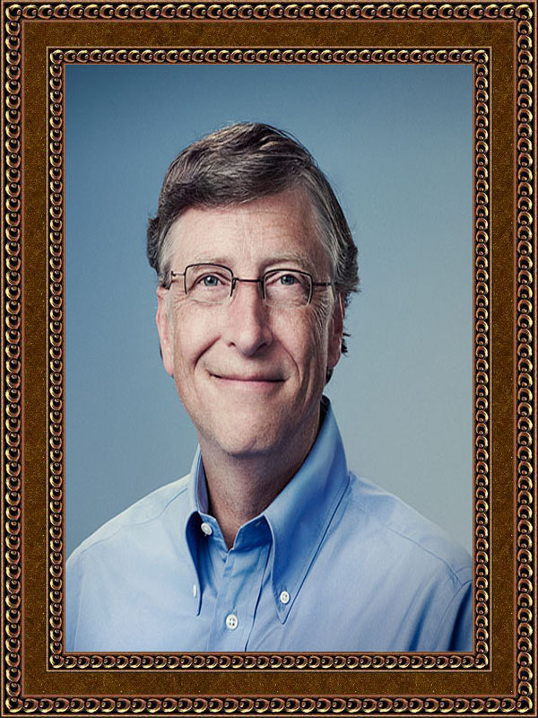
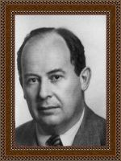
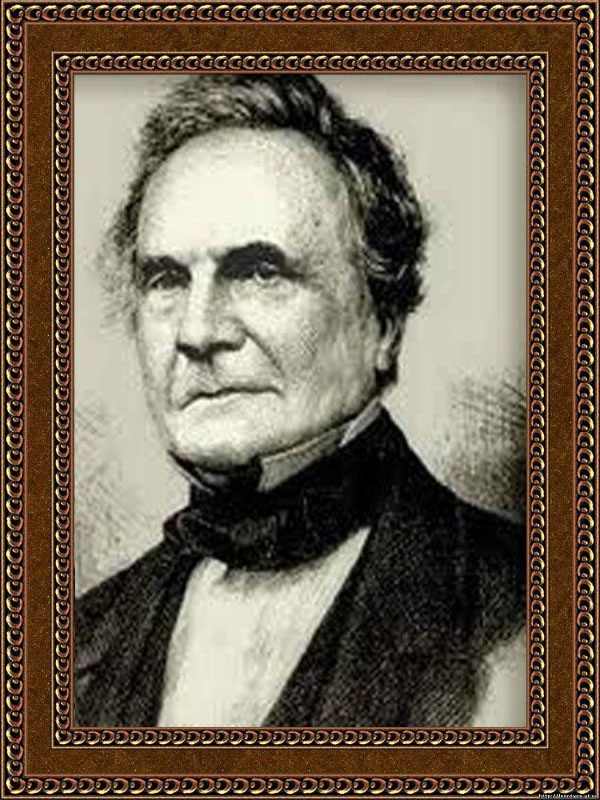

Стівен Джобс народився в містечку Маунтін-В’ю, штат Каліфорнія. Його дитинство і юність пройшли там же, у прийомній сім’ї Пола і Клари Джобс, яким був відданий на виховання рідною матір’ю. У школі, захопившись електронікою і тяжіючи до спілкування зі старшими хлопцями, Джобс знайомиться із Стівом Возняком, своїм майбутнім колегою по компанії Apple. Перша їхня спільна робота межувала з хуліганством: два Стіва змайстрували т. н. BlueBox (букв. "Синя коробка”) – пристрій, що дозволяло здійснювати безкоштовні телефонні дзвінки на далекі відстані. Згодом, згідно з легендою, на основі тієї ж схеми вони побудували перший спільний бізнес. Возняк виготовляв ці пристрої під час свого навчання в Берклі, а Джобс, будучи учнем старших класів, займався їх продажем. Закінчивши середню школу в 1972 році, Стів Джобс поступив до коледжу Ріда в Портленді, штат Орегон. Після першого семестру він був відрахований за власним бажанням, але залишався жити в кімнатах друзів ще близько півтора років. Тоді він потрапив на курси каліграфії, що в згодом наштовхнуло його на думку оснастити систему MacOS масштабованими шрифтами. Потім Стів влаштувався на роботу в Atari. Будучи на 5 років старше Джобса, Возняк до того часу вже блискуче розбирався в комп’ютерах і вони зі Стівеном і Рональдом Уейном, креслярем з Atari 1 квітня 1976 заснували компанію Apple Computer Co. Займалася виробництвом комп’ютерів власної конструкції, вона була зареєстрована офіційно на початку 1977 року. Автором більшості розробок був Стівен Возняк, тоді як Джобс виступав маркетологом. Вважається, що саме Джобс переконав Возняка доопрацювати придуману ним схему мікрокомп’ютера, і тим самим дав поштовх до створення нового ринку персональних комп’ютерів. Назва компанії було придумано Джобсом. Поперше, хлопці хотіли вибрати провокаційна назва (у той час існувала звукозаписна компанія з аналогічною назвою, ті хто захоплювався Бітлами знають), ну і по-друге, Стів просто любив яблука. Стівен Джобс і Стівен Возняк стали засновниками компанії «Apple». Займалася виробництвом комп’ютерів власної конструкції, вона була заснована 1 квітня 1976 року, а зареєстрована офіційно на початку 1977 року. Першим персональним комп’ютером, який представили Стів Джобс і Стів Возняк, був Apple I за ціною 666 доларів 66 центів. Згодом був створений новий комп’ютер Apple II. Успіх комп’ютера Apple I і Apple II зробив Apple ключовим гравцем ринку персональних комп’ютерів. У грудні 1980 р. відбувся перший публічний продаж акцій компанії (IPO), що зробило Стіва Джобса мультимільйонером. У 1986 р. Стів купує The Graphics Group (пізніше перейменовану в Pixar) у Lucasfilm за 5 мільйонів доларів. Хоча оцінна вартість компанії становила 10 мільйонів доларів, в той момент Джорджу Лукасу потрібні були гроші для фінансування зйомок Зоряних воєн. Під керівництвом Джобса Pixar випустила такі фільми, як «Історія іграшок» і «Корпорація монстрів». У 2006 р. Джобс продав Pixar студії Walt Disney за 7,4 мільярда доларів акціями компанії. Джобс залишився в раді директорів Disney і одночасно став найбільшим фізичною особою-акціонером Disney, отримавши в своє розпорядження 7 відсотків акцій студії. 1997 – Стів Джобс стає тимчасовим виконавчим директором Apple, змінивши на посаді колишнього виконавчого директора Гіла Амеліо. 1998 – перебуваючи на посаді тимчасового виконавчого директора компанії Apple, закриває кілька збиткових проектів, таких як Apple Newton, Cyberdog і OpenDoc. Був представлений новий комп’ютер iMac. З появою iMac зростання продажів комп’ютерів Apple почав збільшуватися. 2000 – з назви посади Джобса зникло слово «тимчасовий», а сам засновник Apple потрапив до Книги рекордів Гіннеса як виконавчий директор з самою скромною зарплатою в світі (за офіційними документами, зарплата Джобса на той момент складала 1 долар на рік; згодом подібну схему зарплати використовували інші корпоративні керівники). Стів Джобс отримав премію від Apple у вигляді реактивного літака Gulfstream вартістю 43,5 мільйона доларів з угодою, за якою компанія брала на себе всі витрати з утримання літака. 2001 – Стів Джобс представив перший плеєр iPod. Через кілька років продаж iPod стала основним джерелом доходу компанії. Під керівництвом Джобса Apple суттєво зміцнила свої позиції на ринку персональних комп’ютерів. 2003 – створений iTunes Store. 2005 – На конференції розробників WWDC 2005 Стів Джобс оголосив про перехід на Intel. 2006 – Apple представила перший ноутбук на базі процесорів Intel. 2007 – Apple представила мережний мультимедійний плеєр Apple TV, 29 червня почалися продажі мобільного телефону iPhone. 2008 – Apple представила найтонший ноутбук у світі, що отримав назву MacBook Air.
Вільям (Білл) Гейтс (William (Bill) Gates) народився 28 жовтня 1955р. Він і дві його сестри виросли в Сіетлі. Їхній батько, Уілльям Гейтс II, – адвокат. Мати Гейтса, Мері Гейтс, була шкільною вчителькою, членом правління в Університеті штату Вашингтон (University of Washington) і головою благодійної організації United Way International. Білл Гейтс вчився в муніципальній початковій школі, а потім – у приватній школі Lakeside School. Там, у віці 13 років, він почав програмувати. У 1973р. Гейтс вступив на перший курс Гарвардського університету. У Гарварді він жив на одному поверсі зі Стівом Баллмером (Steve Ballmer), який сьогодні займає посаду віце-президента Microsoft з продажу та підтримки. Під час свого перебування в Гарварді Білл Гейтс розробив мову програмування BASIC для першого мінікомп’ютера – MITS Altair. На третьому куре Білл Гейтс залишив навчання в Гарварді, вирішивши повністю присвятити себе Microsoft, компанії, яку він заснував в 1975 р. з Полом Алленом (Paul Allen). Твердо впевнені в тому, що персональний комп’ютер стане незамінним на кожному робочому місці і в кожному домі, вони почали розробляти програмне забезпечення для персональних комп’ютерів. Дар передбачення Білла Гейтса щодо розвитку персональних комп’ютерів став ключовим чинником успіху Microsoft і індустрії програмного забезпечення в цілому. Гейтс активно займається управлінням і прийняттям стратегічних рішень в Microsoft і грає важливу роль в технічній розробці нових продуктів. Значна частина його часу присвячена зустрічам з клієнтами, а також спілкуванню по електронній пошті з співробітниками Microsoft у всьому світі. Під керівництвом Білла Гейтса, Microsoft постійно розвиває і вдосконалює інформаційні технології і продукти. Запорука успіху Microsoft – прагнення зробити роботу з комп’ютером більш простий, економічною і приємною. Чи не беруться до уваги і довгострокові перспективи – у поточному фінансовому році на науково-дослідні роботи було виділено понад $ 3 мільярдів. У 1995 р. Білл Гейтс написав книгу "Дорога в майбутнє” ("The Road Ahead”), в якій виклав свої погляди на те, в якому напрямку рухається суспільство у зв’язку з розвитком інформаційних технологій. Книга була написана в співавторстві з Натаном Мірволдом (Nathan Myhrvold), віце-президентом Microsoft, і журналістом Пітером Райнарсоном (Peter Rinearson). Протягом семи тижнів "Дорога в майбутнє” займала перше місце в списку бестселерів газети New York Times. Книга була опублікована в США у видавництві Viking і протрималася в списку бестселерів New York Times в цілому 18 тижнів. "Дорога в майбутнє” була видана більш ніж в 20 країнах. Тільки в Китаї було продано понад 400 000 примірників. У 1996 р., коли корпорація Microsoft була переорієнтована на Інтернет-технології, Гейтс вніс до книги значні корективи. У другій редакції знайшла відображення ідея про те, що поява інтерактивних мереж – важлива віха в історії розвитку людства. Друга редакція книги, що вийшла у м’якій обкладинці, також стала бестселером. У 1999 році Білл Гейтс написав книгу ("Бізнес зі швидкістю думки”) Business @ the Speed of Thought, яка показує, як інформаційні технології можуть вирішувати бізнес-завдання в зовсім новому ключі. Ця книга, створена у співавторстві з Коллінзом Хемінгуеєм (Collins Hemingway), була випущена на 25 мовах і продається більш ніж в 60 країнах світу. "Бізнес зі швидкістю думки” одержала високу оцінку критиків і була внесена в списки бестселерів газет New York Times, USA Today, Wall Street Journal і веб-сервера Amazon.com. Доходи від продажів обох своїх книг пан Гейтс перераховує до добродійного фонду, діяльність якого спрямована на підтримку використання інформаційних технологій у навчальному процесі. Крім захоплення комп’ютерними технологіями, Білл Гейтс цікавиться біотехнологією. Він входить до правління компанії Icos Corporation і володіє акціями компанії Darwin Molecular, яка є підрозділом британської компанії Chiroscience. Він також заснував компанію Corbis Corporation, яка займається розробкою найбільшого джерела візуальної інформації у світі – це всеохоплюючий цифровий архів творів мистецтва і фотографій з державних і приватних колекцій, що зберігаються в різних країнах. Білл Гейтс також вклав кошти в компанію Teledesic, яка працює над реалізацією грандіозного проекту із запуску на низьку орбіту навколо земної кулі кількох сотень супутників. Завдання цих супутників – забезпечувати всесвітні двосторонні широкосмугові телекомунікації. 1 січня 1994 Білл Гейтс одружився на Мелінді Френч Гейтс (Melinda French Gates). У 1996 р. у них народилася дочка, Дженніфер Кетрін Гейтс (Jennifer Katharine Gates), а в 1999 році – син, Соар Джон Гейтс (Rory John Gates). Білл і Мелінда Гейтс заснували благодійний фонд і внесли до нього понад $ 17 мільярдів для підтримки філантропічних ініціатив у галузі охорони здоров’я та освіти. До справжнього моменту Фонд Білла і Мелінди Гейтс (Bill and Melinda Gates Foundation) передав більше $ 300 мільйонів організаціям, що працюють в області охорони здоров’я, більше $ 300 мільйонів – на вдосконалення освітнього процесу, в тому числі на розвиток ініціатив у галузі бібліотечної справи (Gates Library Initiative) , які дозволять населенню США і Канади з малим доходом працювати з персональними комп’ютерами та Інтернетом в публічних бібліотеках, більше $ 54 мільйонів – на громадські проекти в країнах північно-західного узбережжя Тихого океану, і більше $ 29 мільйонів – на інші спеціальні проекти і в рамках щорічних благодійних кампаній.
Білл Гейтс часто відвідує школи і завжди на своїх виступах ділиться своїм досвідом і баченням глобальних проблем. Кожного разу закінчуючи виступ, він говорить про 11 речах, яким, як він вважає, не навчать у школі. Він говорить про те, як виховання в дусі політ-коректності створило покоління дітей, які відірвані від реальності і не зможуть вижити в суворому світі. Правило 1: Життя не справедливе – звикайте. Правило 2: Суспільство абсолютно не хвилює Ваша САМООЦІНКА. Від вас чекають ДОСЯГНЕНЬ перш за все. Правило 3: Ви НЕ БУДЕТЕ заробляти $ 60,000 в рік одразу після закінчення школи. Ви не станете віце-президентом з особистим водієм, поки ви не заробите на те й інше. Правило 4: Якщо ви думаєте, що вчитель дуже суворий стосовно до вас, – це ще квіточки. Зачекайте, поки у вас з’явиться босс. Правило 5: Смажити гамбургери – нижче вашого гідності? Ваші дідусі і бабусі вважали зовсім по-іншому. Для них смажити гамбургери було можливістю зачепитися в цьому житті. Правило 6: Якщо у вас щось не вийшло, це не вина ваших батьків, так що не треба скиглити, ВЧІТЬСЯ на своїх помилках. Правило 7: Батьки не завжди були такі нудні, як вам зараз здається. Може бути постійна турбота про вас зробила їх такими? Вони вас годують, одягають, постійно слухають які ви чудові. Так що перш ніж критикувати покоління своїх батьків, почніть з себе. Правило 8: Можливо в вашій школі не коректно відкрито називати невдаху невдахою і у вашій школі вже не залишилося невдах, але не в житті. У деяких школах уже не можливо залишитися на другий рік, тому що вам дається СТІЛЬКИ спроб ЗДАТИ іспити, скільки необхідно для переводу в інший клас. У житті все ЗОВСІМ по-іншому. Правило 9: Життя не ділиться на семестри. У вас не буде літніх канікул, і ваш роботодавець не буде допомагати вам ЗНАЙТИ СЕБЕ. Вам доведеться робити це самим у свій вільний час. Правило 10: В телевізорі не показують СПРАВЖНЮ життя. У реальному житті не вийде весь день сидіти в кафе і базікати з друзями. Правило 11: ласкавіше з «ботаніками». Один з них може виявитися вашим босом після закінчення школи.
Джон фон Нейман - німецький математик, який зробив важливий внесок у квантову фізику, квантову логіку, функціональний аналіз, теорію множин, інформатику, економіку та інші галузі науки. Найбільш відомий як праотець сучасної архітектури комп'ютерів (так звана архітектура фон Неймана), застосуванням теорії операторів до квантової механіки (алгебра фон Неймана), а також як учасник Манхеттенського проекту і як творець теорії ігор і концепції клітинних автоматів. Джон фон Нейман, або Йоганн фон Нейман народився 28 грудня 1903 року в місті Будапешт.Родом з Угорщини, син процвітаючого будапештського банкіра, фон Нейман був продуктом того інтелектуального середовища, з якого вийшли такі видатні фізики, як Едвард Теллер, Лео Сціллард, Денис Габор та Юджин Вігнер. Джон виділявся серед них своїми фенеменальними здібностями. У 6 років він перекидався з батьком дотепами давньогрецькою, а в 8 освоїв основи вищої математики. У віці 20-30 років, займаючись викладацькою роботою в Німеччині, він зробив значний внесок у розвиток квантової механіки - наріжного каменю ядерної фізики, і розробив теорію ігор - метод аналізу взаємовідносин між людьми, який знайшов широке застосування в різних областях, від економіки до військової стратегії. Протягом усього життя він любив вражати друзів і учнів своєю здатністю здійснювати в розумі складні обчислення. Він робив це швидше за всіх, озброєних папером, олівцем і довідниками. Коли ж фон Нейману доводилося писати на дошці, він заповнював її формулами, а потім стирав їх настільки швидко, що одного разу хтось з його колег, поспостерігавши за черговим поясненням, пожартував:"Зрозуміло. Це доказ методом стирання" Ю. Вігнер, шкільний товариш фон Неймана, лауреат Нобелівської премії, говорив, що його розум - це "досконалий інструмент, шестерні якого підігнані один до одного з точністю до тисячних часток сантиметра". Ця інтелектуальна досконалість була приправлена неабиякою часткою добродушної і вельми привабливої екцентричності. У поїздках він часом так глибоко замислювався про математичні проблеми, що забував, куди і навіщо повинен їхати, і тоді доводилося телефонувати на роботу за уточненнями. Фон Нейман настільки легко і невимушено відчував себе в будь-якій обстановці, як на роботі, так і в суспільстві, без жодних зусиль перемикаючись від математичних теорій до компонентів обчислювальної техніки, що деякі колеги вважали його "вченим серед вчених", свого роду "новою людиною" , що, власне, і означала його прізвище в перекладі з німецької. Теллер якось жартома сказав, що він "один з небагатьох математиків, здатних зійти до рівня фізика". Сам же фон Нейман не без гумору пояснював свою мобільність тим, що він родом з Будапешта:"Тільки людина, що народилася в Будапешті, може, увійшовши у двері, що обертаються після вас, вийти з них першим". Інтерес фон Неймана до комп'ютерів в якійсь мірі пов'язаний з його участю в надсекретному Манхеттенському проекты зі створення атомної бомби, який розроблявся в Лос-Аламосі, штат Нью-Мексико. Там фон Нейман математично довів здійсненність вибухового способу детонації атомної бомби. Тепер він міркував про значно більш потужну зброю - водневу бомбу, створення якої вимагало дуже складних розрахунків. Однак фон Нейман розумів, що комп'ютер - це не більше, ніж простий калькулятор, що - принаймні потенційно - він представляє собою універсальний інструмент для наукових досліджень. У липні 1954 року, менше ніж через рік після того, як він приєднався до групи Моучлі і Еккерта, фон Нейман підготував звіт на 101 сторінці, у якому узагальнив плани роботи над машиною EDVAC. Цей звіт, озаглавлений "Попередня доповідь про машину EDVAC" являв собою прекрасний опис не тільки самої машини, але і її логічних властивостей. Присутній на доповіді військовий представник Голдстейн розмножив доповідь і розіслав вченим як США, так і Великобританії.Завдяки цьому "Попередня доповідь" фон Неймана стала першою роботою з цифрових електронних комп'ютерів, з якою познайомилися широкі кола наукової громадськості. Доповідь передавали з рук в руки, з лабораторії в лабораторію, з університету в університет, з однієї країни в іншу. Ця робота звернула на себе особливу увагу, оскільки фон Нейман користувався широкою популярністю в науковому світі. З того моменту комп'ютер був визнаний об'єктом, який представляв науковий інтерес. І насправді, і донині вчені іноді називають комп'ютер "машиною фон Неймана". Читачі "Попередньої доповіді" були схильні вважати, що всі ідеї, що містяться в ній, зокрема, принципово важливе рішення зберігати програми в пам'яті комп'ютера, виходили від самого фон Неймана. Мало хто знав, що Моучлі і Еккерт говорили про програми, записані в пам'яті, принаймні за півроку до появи фон Неймана в їх робочій групі. Більшості невідомо було і те, що Алан Тьюринг, описуючи свою гіпотетичну універсальну машину, ще в 1936 році наділив її внутрішньою пам'яттю. У дійсності, фон Нейман читав класичну роботу Тьюринга незадовго до війни. Побачивши, скільки шуму наробив фон Нейман і його "Попередня доповідь", Моучлі і Еккерт були глибоко обурені. У свій час з міркувань секретів вони не змогли опублікувати ніяких повідомлень про свій винахід. І раптом Голдстейн, порушивши секретність, надав трибуну людині, яка тільки-тільки приєдналася до проекту. Суперечки про те, кому повинні належати авторські права на EDVAC і ENIAC призвели врешті-решт до розпаду робочої групи. Надалі фон Нейман працював в Прінстонському інституті перспективних досліджень, брав участь у розробці декількох комп'ютерів новітньої конструкції. Серед них була, зокрема, машина, яка використовувалася для вирішення завдань, пов'язаних із створенням водневої бомби. Фон Нейман дотепно охрестив її "Маніяк" (MANIAC, абревіатура від Mathematical Analyzer, Numerator, Integrator and Computer - математичний аналізатор, лічильник, інтегратор і комп'ютер). Фон Нейман був також членом Комісcіі з атомної енергії і головою консультативного комітету ВПС США по балістичним ракетам. Помер фон Нейман 8 лютого 1957 році у Вашингтоні від саркоми.
Чарльз Беббідж Чарльз Беббідж був сином багатого банкіра з Девон (Англія) і дуже талановитим математиком. Протягом 13 років він завідував кафедрою математики Кембріджського університету (колись цей пост займав Ньютон), але не прожив при університеті ні дня і не прочитав там жодної лекції. Беббідж був одним із засновників Королівського астрономічного товариства, автором всіляких творів на найрізноманітніші теми - від політики до технології виробництва. Він брав участь у створенні різних приладів, зокрема, тахометра, і пристосувань, наприклад запобіжної решітки для залізничного локомотива, яка дозволяла відкидати з дороги випадково потрапили туди предмети. Беббідж займався і такими серйозними проблемами, як розрахунок смертності населення і реформа поштової служби. Однак головною пристрастю Беббіджа була боротьба за бездоганну математичну точність. Він виявив похибки в таблицях логарифмів Неппер, якими широко користувалися при обчисленнях астрономи, математики, штурмани далекого плавання. У 1821 році приступив до розробки своєї обчислювальної машини, яка допомогла б виконати більш точні обчислення. У 1822 році була побудована пробна модель різницевої машини, здатної розраховувати і друкувати великі математичні таблиці. Робота моделі грунтувалася на принципі, відомому у математиці як "метод кінцевих різниць": при обчисленні многочленів використовується тільки операція додавання і не виконується множення і ділення, які значно важче піддаються автоматизації. При цьому передбачалося застосування десяткової системи числення, а не двійковій, як у сучасних комп'ютерах. Це було дуже складне, велике пристрій і призначалося для автоматичного обчислення логарифмів. Протягом наступних десятиліть Беббідж працював над своїм винаходом. У 1834 році він прийшов до ідеї створення ще більш потужної машини - Аналітичної, яка не просто повинна була розв'язувати математичні задачі одного певного типу, а виконувати різноманітні обчислювальні операції у відповідності з інструкціями, які задаються оператором. У цій машині він використовував ідею програмного керування Жаккарда за допомогою перфокарт. Беббідж розвинув цю ідею, застосувавши її для автоматизації обчислень, і реалізував управління в залежності від поточного результату обчислень. Аналітична машина повинна була мати такі компоненти, як "млин" і "склад" (арифметичний пристрій і пам'ять), що складаються з механічних важелів і шестерень. Пам'ять машини вміщала до 100 сорокоразрядних чисел. Ці числа повинні були зберігатися в пам'яті, поки до них не дійде черга в арифметичному пристрої. Результати операції або відправлялися в пам'ять, щоб також чекати своєї черги, або роздруковувалися. Якщо Різницева машина мала сумнівні шанси на успіх, то Аналітична машина і зовсім виглядала нереалістичною. Її просто неможливо було побудувати і запустити в роботу. У своєму остаточному вигляді машина повинна була бути не менше залізничного локомотива. Її внутрішня конструкція являла собою безладне нагромадження сталевих, мідних і дерев'яних деталей, годинникових механізмів, що приводяться в дію паровим двигуном. Аналітична машина так і не була побудована. Все, що дійшло від неї до наших днів, - це оберемок креслень і малюнків, а також невелика частина арифметичного пристрою і друкуючий пристрій, сконструйований сином Беббіджа. Найвищим досягненням Чарльза Беббіджа і разом з тим його найбільшою болем була розробка принципів, покладених в основу сучасних комп'ютерів, за ціле століття до того, як з'явилася технічна можливість їх реалізації. Він витратив кілька десятиліть, великі урядові субсидії і значну частину власних коштів у спробах створити обчислювальну машину, що працює на цих принципах. Цікаво, що в процесі роботи над проектом Аналітичної машини Беббідж знайшов підходи до створення значно менше громіздкого пристрою різницеву машину № 2. За іронією долі різницевої машини пощастило більше. Шведський видавець, винахідник, перекладач Пер Георг Шойц, прочитавши якось про цей пристрій, побудував його злегка видозмінений варіант, скориставшись цінними порадами Беббіджа. У 1854 році цей пристрій пройшло випробування в Лондоні, а роком пізніше Різницева машина Шойца була удостоєна золотої медалі на Всесвітній виставці в Парижі. Через ще кілька років англійський інженер Данкін за замовленням британського уряду, який відмовив у свій час в підтримці Беббідж, зробив копію шведської машини для урядової канцелярії. У чому ж суть досягнень Чарльза Беббіджа і його учениці і помічниці Ади Лавлейс? У 1985 році співробітники Музею науки в Лондоні вирішили з'ясувати, чи можливо насправді побудувати обчислювальну машину Беббіджа. Після кількох років напруженої роботи старання увінчалися успіхом. У листопаді 1991 року Різницева машина № 2 вперше виробила серйозні обчислення.